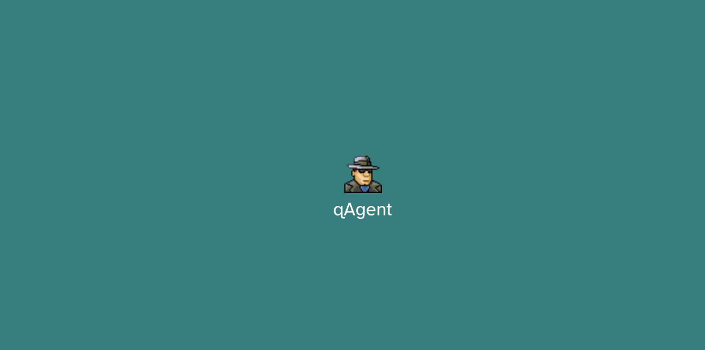

|
This post originally appeared on my cohost.

The first, as far as I know, interface drama using entirely cohost posts. Tachygram by @belbeeno has an "enforcer" style narrative inspired by Hypnospace Outlaw where the user looks at posts made on cohost and identifies "anomalous content."
Check out the post mortem here. I found it particularly clever of @belbeeno to prototype the flow in Twine, since Twine lends itself to mapping out complex decision trees in a way that's much easier to write for than a typical Google or Notion doc.
Check out more interface dramas on the Interface Drama Master List.
CJ is a designer and indie dev. They write as a hobby. If you like this article, why not say hello in an email or buy them a coffee to support their work?